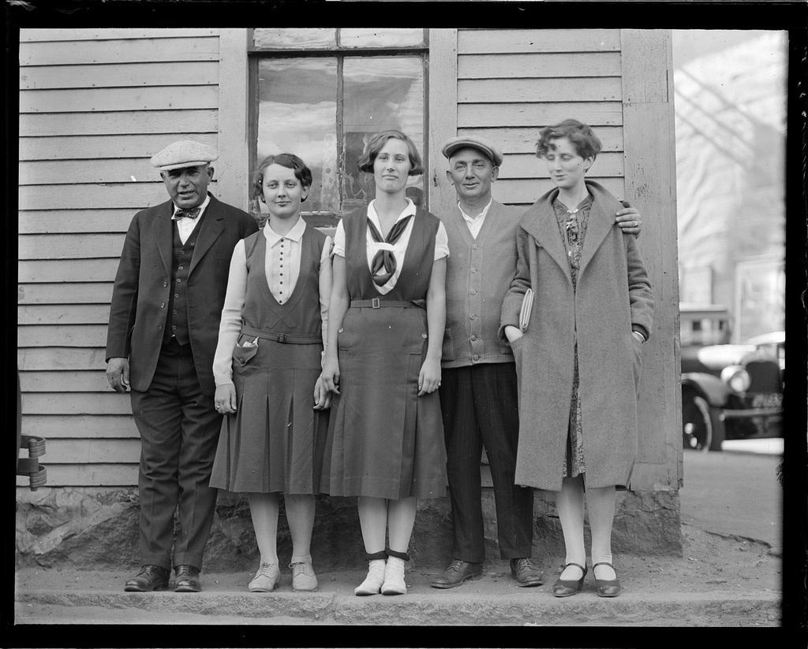

Упаковка йогурта из Ашана
с кодом Брайля
для слепых

Зачем вам нужен доступный сайт или, как показать сайт незрячему?
1. «Зачем нужен доступный сайт?»
Сайт будет удобен бо́льшему количеству людей
Сайт принесёт больше денег
А теперь поговорим о людях
Ограничения людей

Какие бывают ограничения?
- Слабовидящие
- Незрячие
- Когнитивные расстройства
- Глухие
- Глухонемые
- Нарушения памяти
|
- Нарушения опорнодвигательного
аппарата
- Нарушения моторики речи
- Повышенная фоточувствительность
- Комбинация перечисленных
нарушений
|
Незрячие
- используют скринридеры (NVDA, JAWS)
- экраны брайля ($2400 за 12 символьный экран)
- (sic!) не пользуются мышью
Челябинское отделение общества слепых

Стиви Уандер — автор песни «I just call to say I love you»
Слабовидящие
- Используют шрифтовые/контрастные настройки
- Экранные лупы
- Обязывает использовать
em/rem
Когнитивные расстройства
- снижение памяти, внимания или способности к обучению;
- жалобы пациента на повышенную утомляемость при выполнении умственной работы;
Это всё:
- Аварии
- Мигрень
- Бессонная ночь
Мигрень и повышенная
фоточувствительность

Когнитивные расстройства
Для них:
- нужно повторять
- избегать запутывания
Нарушения опорнодвигательного аппарата
- Фрезеровщик
- Сломаная рука
- Аварии
Дальтоники
- 10% мужчин
- Допустим, нет отличия между зелёным и красным
— Хорошо, сколько этих людей?

— Как убедить начальника начать менять сайт?
Привет. Мы готовы и дальше отказываться от девятнадцати процентов платёжеспособной аудитории?
—
Есть какие-то наработки в этой области?
Стандарты и бренды:
- WCAG — стандарт от w3c консорциума
- Section 508 — американский стандарт для государственных сайтов
- ГОСТ Р 52872 — российский вариант
- Опытное креативное бюро Артёма Геллера
Скандалы, интриги, расследования — распространённые мифы
- Валиден, значит доступен
- Доступный сайт должен быть уродливым
- Доступный сайт нужен только слепым
- Забота о доступности - дорогой и сложный процесс
- Текстовой версии достаточно
- Технологии доступности обычно доступны
- Инвалидов в интернете нет
- Доступный сайт неудобен
Делая сайт доступным, вы делаете его удобным для всех
2. «Как делать доступный сайт?»
Обязательно держите в уме
- Семантичность
- Капча не нужна!
- Флеш не нужен!
- Сначала пишите разметку, только затем стили
- Что является текстом, должно быть текстом —
class="ir"
- Крупные активные области — Закон Фитса
- Доступность с клавиатуры
- Следите за структурой заголовков
Обязательно держите в уме
- Порядок контента на сайте
- Последовательность контента = Последовательность разметки = Последовательность Табов
- Skip Links на сайтах с длинными страницами
- ARIA
- Контрастность
- Удобочитаемость
Обязательно держите в уме
- Валидация, но не слишком налегайте. Инструмент, а не цель.
- Сопровождение по шагам
- Карта сайта и поиск
- Шрифт без засечек легче воспринимается
- Минимум 16 пикселей для основного текста
- Ограничивайте длину строки 80 символами (Для экранов брайля и удобочитаемости)
Маленькие помощники из бойлерплейта
/* Скрыто визуально, доступно для скринридеров */
.visuallyhidden { /* table>caption */
border: 0;
clip: rect(0 0 0 0);
height: 1px; width: 1px;
margin: -1px; padding: 0;
overflow: hidden;
position: absolute;
}
/* Показаны пользователю при получении фокуса */
.visuallyhidden.focusable:active, /* Skip Links */
.visuallyhidden.focusable:focus {
clip: auto;
height: auto; width: auto;
margin: 0;
overflow: visible;
position: static;
}
/* В разметке текст, пользователю картинка */
.ir { /* Image Replacement */
background-color: transparent;
border: 0;
overflow: hidden;
}
Проверяйте сами:
- Используйте букмарклеты (ToggleCSS, Img→alt)
- Отключите стили
- Откройте сайт в текстовом браузере — Lynx, Elinks
- Прочитайте сайт в двух метрах от монитора
Проверяйте сами:
- Прочитайте сайт не используя мышь
- Прочитайте сайт используя только одну руку
- Отключите картинки и проверьте
alt
- Отключите джаваскрипт (к вопросу о ссылках `href="#"` и фоллбеке в виде отдельной страницы) — Без паники, скринридеры выполняют джаваскрипт, но это полезно для старых версий и для поисковых ботов.
Основы
- HTML
- Title
- Метатеги
- Заголовки
- Ссылки
- Абзацы
- Текст
Основы
- Картинки
- Таблицы
- Списки
- Кнопки
- Формы
- JS && CSS файлы
- WAI-ARIA
HTML
Всегда добавляйте аттрибут lang="ru|en"
Head>Title
Всегда зачитывается скринридером первым на странице
Заголовки (H1—H6)
Должна существовать строгая архитектура —
По заголовкам ним можно воссоздать навигацию на странице
Метатеги
<link rel="home" href="{url}" /><link rel="prev" href="{url}" /><link rel="next" href="{url}" /><a rel="prev" href="{url}" title="{title}">Link</a><a rel="next" href="{url}" title="{title}">Link</a>
Ссылки
- Не убирайте outline! outlinenone.com/
- Используйте
:hover вместе с :focus для отклика по табу
href никогда не должен быть пустым, хотя бы href="#"- Не дублируйте
title текстом ссылки
- Дополняйте существующий текст
<a href="#" title="pdf, 21kb">скачать</a>
- Учитывайте дальтонизм
Нажмите на зелёную кнопку
Сравните:
кнопка или
кнопка
Против:
зелёная кнопка или
красная кнопка
Не опирайтесь только на цветовую дифференциацию, обязательно добавляйте дополнительные контексты — иконки, паттерны
Абзац
- Интерлиньяж не меньше 1.2
- Отступы не
<br>, а p+p {margin-top: 1em;}
Картинки
alt должен быть всегда!- Если картинка декоративная, то
alt пустой и role="presentation"
- Если описание картинки избыточно или повторяет описание пункта в списке, то
alt пустой
- Если
alt не написать, то зачитывается имя и путь до файла
Таблицы
- Только для табличных данных!
caption — название таблицыtable[summary="SMTH"] — Описание таблицыthead>th — Позволит зачитать название колонки из шапки таблицы, если человек на 100 строчке забыл порядок колонок.tbody — может быть несколькоtfoot — может быть зачитано отдельно и рендерится до полного рендера всей таблицы
Списки
- Используйте для меню и для действительных списков
- Допустим, список альбомов на странице
- В скринридерах существует хоткей для перехода на следующий элемент
Кнопки
- Должна быть кнопкой
- Должна быть большой кнопкой по закону Фитса
- Не ссылкой
- Никогда не должна быть ссылкой
- Если всё же иначе, то добавь
role="button"
Формы
fieldset’ы и легенды (зачитываются)- Обязательная привязка лэйблов и инпутов
- Можно обернуть инпут в лэйбл, но не будет работать в IE6. Кто-то расстроился?
Формы
aria-label, aria-describedby — для лэйбловaria-alert — для ошибокaria-required[aria-invalid="true"] — добавляя красную рамку на незаполненный инпут, добавьте этот аттрибут и вы спасёте котёнка
JS и CSS файлы
Подключайте их отдельными файлами, чтобы скринридер не имел шанса ошибиться и не стал бы читать вслух ваш идеальный код
Accessible Rich Internet Applications
Полноценные доступные
веб-приложения
Создавая крутые приложения, мы также создаём барьеры
Accessible Rich Internet Applications
- Помогает избавиться от барьеров
- Стандарт, договоренность или слой абстракции
Accessible Rich Internet Applications
- Скринридеры легче понимают структуру сайта
- Скринридеры легче понимают, что происходит в приложениии и будут оповещать об этом пользователя
- На любом сайте или веб-приложении есть условия для применения АРИА тегов
- Посмотрите исходники jQueryUI
ARIA Document Structure
| article |
columnheader |
definition |
| directory |
document |
group |
| heading |
img |
list |
listitem |
math |
note |
presentation |
region |
row |
| rowheader |
separator |
|
ARIA Landmarks
navigation — для меню на сайте (html5: nav)banner — для шапки сайта (html5: body>head)main — для основного контента на сайте, без сайдбараarticle — для главного блока информации
на странице (html5: article)
ARIA Landmarks
complementary — для сайдбара (html5: aside)contentinfo — для подвала на странице с копирайтами и всем таким (html5: BODY>FOOTER)form, search — для форм и поискаapplication — для всяких виджетов, очень явно подходит для виджета выборы цены
ARIA Landmarks
header[aria-role=”banner”]
|
nav[aria-role=”navigation”]>ul>li*
|
form, search
|
|
div[aria-role=”main”]
aside[aria-role=”
complementary”]
|
article[aria-role=”article”]
|
|
|
footer[aria-role=”contentinfo”]
|
ARIA Widget Roles
alert |
alertdialog |
button |
checkbox |
| combobox |
dialog |
gridcell |
link |
| log |
marquee |
menuitem |
menuitemcheckbox |
| menuitemradio |
option |
progressbar |
radio |
| radiogroup |
scrollbar |
slider |
spinbutton |
| status |
tab |
tabpanel |
textbox |
| timer |
tooltip |
treeitem |
|
ARIA Widget Container Roles
| grid |
listbox |
menu |
menubar |
tablist |
toolbar |
tree |
treegrid |
ARIA Widget Properties
Все свойства начинаются с
aria-…
| activedescendant |
atomic |
autocomplete |
controls |
| describedby |
dropeffect |
flowto |
haspopup |
| label |
labelledby |
level |
live |
| multiline |
multiselectable |
orientation |
owns |
| posinset |
readonly |
relevant |
required |
| setsize |
sort |
valuemax |
valuemin |
Обычный таб виджет
div
ul
li
li
div
div
div
Доступный таб виджет
// Все аттрибуты, на самом деле, начинаются с `aria-`
div[role="application"][activedescendant="fold1"]
ul[role="tablist"]
li[role="tab"][describedby="fold1"][selected="true"]
li[role="tab"][describedby="fold2"][selected="false"]
div[role="tabpanel"][hidden="false"]
div[labelledby="fold1-tab"][hidden="false"]
div[labelledby="fold2-tab"][hidden="true"]
Обычный виджет —
input[type="range"]

div.wrap
div.range
div.spin
div.legend
Доступный виджет
div.wrap[role="application"]
div.range
div.spin
[role="slider"]
[labelledby="label handler"]
[valuemin="1"][valuemax="700"]
[valuenow="197"][valuetext="$197 is max price"]
div.legend[role="presentation"]
Уведомления — aria-live="*"
off — изменения не озвучиваются (значение по умолчанию)polite — об измененении сообщается после завершении пользователем его действияassertive — скринридер может прервать действия пользователя, но не сразуrude — скринридер мгновенно прерывает пользователя и рассказывает об изменениях
Молчаливая форма
div
textarea
button
span.char-count
Вежливая форма [aria-live="polite"]
div
textarea
button
span.char-count[aria-live="polite"]